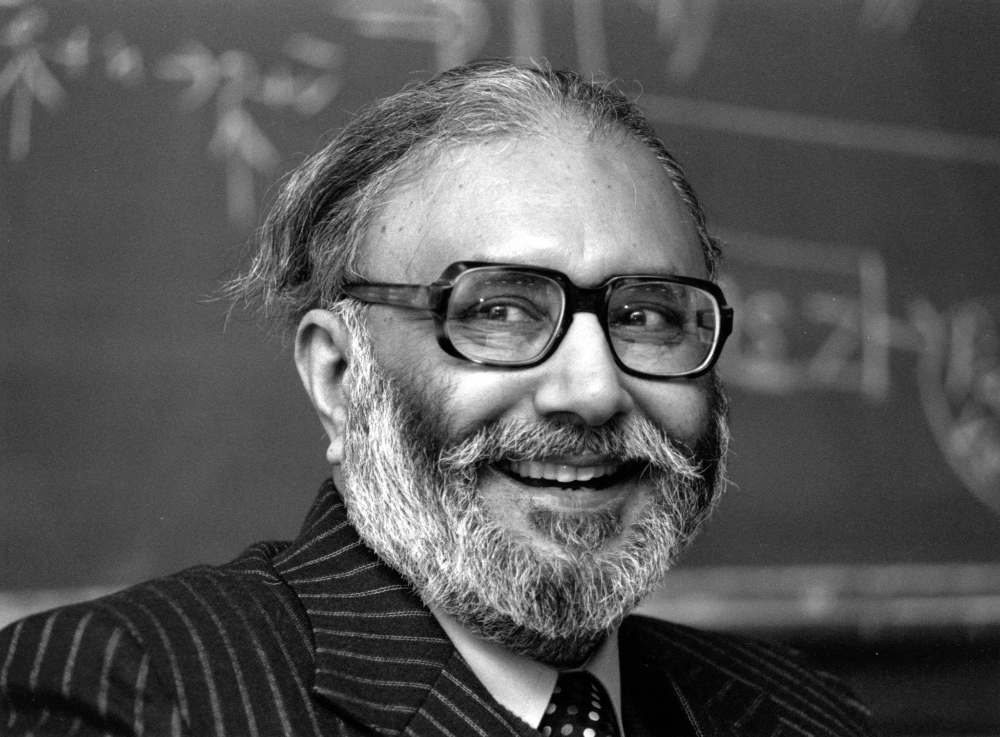

Dr. Abdul Salam
A great scientist got a nobel prize in physics

Mohammad Abdus Salam NI(M) SPk was a South Asian theoretical physicist and a Nobel Prize laureate
Muhammad Abdul Salam's Early Life
- 1926 - Born in Jhang, Pakistan
- 1950 - Smith's Prize (Cambridge University)
- 1957-58 - Hopkins Prize (Cambridge University) for "the most outstanding contribution to Physics"
- 1958 - Adams Prize (Cambridge University)
- 1959 - Fellow of the Royal Society
- 1959 - Sitara-e-Pakistan by the President of Pakistan for contribution to science in Pakistan
- 1958 - Pride of Performance Award by the President of Pakistan
- 1964 - Hughes Medal (Royal Society, London)